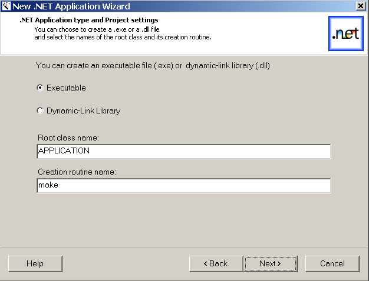

Application Type Dialog
The third dialog of the .NET wizard allows you to specify the type of the .NET application, that is an executable file
(.exe) or a dynamic-link library (.dll).
By default, the wizard generates a root class named APPLICATION with a creation routine
make. You may specify different names by replacing the default
values in the corresponding text fields.

Upon clicking on Next, the wizard checks the validity of the settings and displays an appropriate error message in case the
names are not valid Eiffel identifiers.
>> NEXT